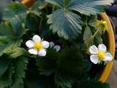

Afin de m'exercer à la création de page web j'ai entrepris la construction de ce site fictif dédié aux plantes que je cultive sur mon balcon.
J'ai choisi ce thème de peu d'intérêt de façon à pouvoir me concentrer sur l'objet de mon apprentissage sans avoir à me soucier des contenus.